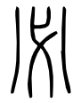

齊必變食，〔注〕孔曰：「改常饌。」 注：「改常饌。」 〇正義曰：周官·膳夫：「王日一舉，王齊日三舉。」注：「鄭司農云：『齊必變食。』」賈疏：「齊謂散齊、致齊，齊必變食，故加牲體至三太牢。」案：古人日三食，王日一舉，謂朝時用一太牢，並日中、夕皆食之。至齊時，則日中及夕皆特殺，與平時常饌異，所謂「變食」者也。 凌氏曙典故覈云：「變食者，謂盛饌也。君子敬其事則盛其禮，故不餕餘也。國語曰：『大夫舉以特牲，士食魚炙。』然則夫子之變食，或特牲而不餕餘焉。」案：莊子·人間世：「顏回曰：『回之家貧，惟不飲酒、不茹葷者數月矣。若此，則可以爲齊乎？』曰：『是祭祀之齊，非心齊也。』」據周語言耕籍前五日，王入齊宮，飲醴。醴味醇淡，與酒不同，故莊子言「不飲酒」也。「不茹葷者」，禮·玉藻注：「葷者，薑及辛菜也。」荀子·哀公篇：「夫端衣玄裳，絻而乘路者，志不在於食葷。」端衣玄裳即是齊服。楊倞注：「葷，葱薤之屬也。」不飲酒，不茹葷，是異常饌。解者誤以葷爲肉食，而凡齊皆禁用之，與禮意悖矣。士喪禮記言人子「養疾皆齊」，而曲禮言「父母有疾，食肉不至變味，飲酒不至變貌」。齊時或可飲酒，則謂齊禁肉食，於古無徵矣。高誘注呂覽·孟春紀引「齊必變食」二句，云：「自禋潔也。」「禋潔」亦不餕餘之意。 居必遷坐。〔注〕孔曰：「易常處。」 注：「易常處。」 〇正義曰：說文：「𡋲，止也。」「坐」古文「𡋲」。釋名·釋姿容：「坐，挫也。骨節挫屈也。」江氏永圖考曰：「古人之坐，兩膝著地而坐於足，與跪相似。但跪者直身，又謂之跽。跽危而坐安，此跪坐之別也。」案：「居」與「尻」同，「居」即是「坐」。言「遷坐」者，謂所居之處耳。胡氏培翬燕寢考：「既夕記『士處適寢』，又云：『有疾，疾者齊。』注云：『適寢者不齊，不居其室。』禮記·檀弓曰：『君子非致齊也，非疾也，不晝夜居於內。』注：『內，正寢之中。』玉藻云：『將適公所，宿齊戒，居外寢。』外寢，正寢也。穀梁傳云：『公薨於路寢。』路寢，正寢也。寢疾居正寢，正也。大戴禮·明堂篇云：『此天子之路寢也，不齊不居其室。』古者自天子以至於士，常居皆在燕寢，惟齊及疾乃居於正寢，鄉黨所云『齊，居必遷坐』以此。孔注云：『易常處。』蓋常處在燕寢，至齊必遷居正寢。」今案：皇疏引范寧云：「齊以敬潔爲主，以期神明之享，故改常之食，遷居齊室也。」齊室即適寢。既居在適寢，則宿亦在適寢。論語無文，從可知也。 食不厭精，膾不厭細。 正義曰：張栻解：「厭當作平聲。言不待精細者而後屬厭也。」案：周語「不可厭也」，韋注：「厭，足也。」晉語「民志無厭」，韋注：「厭，極也。」夫子疏食飲水，樂在其中，又以士恥惡食爲不足與議，故於食膾皆不厭精細也。精者，善米也。中山經：「糈用五種之精。」郭注以爲「五穀之美」。九章算術：「糲米率三十，粺米二十七，鑿米二十四，侍御二十一。」是侍御爲米之極精矣。 「膾」者，說文云：「膾，細切肉也。」釋名·釋飲食：「膾，會也。細切肉，散分其赤白，異切之，乃會和之也。」少儀云：「牛與羊魚之腥，聶而切之爲膾。」注云：「聶之言牒也。先藿葉切之，後報切之，則成膾。」又內則云：「肉腥細者爲膾，大者爲軒。」注云：「言大切、細切異名也。膾者必先軒之，所謂聶而切之也。」李氏惇羣經識小謂「其制與今之肉絲相似。」釋文：「膾，本又作鱠。」 食饐而餲，〔注〕孔曰：「饐餲，臭味變。」 魚餒而肉敗，不食。〔注〕魚敗曰餒。 正義曰：朱氏彬經傅考證解此文云：「而與若同，猶與也。」釋文：「餒，本又作鮾。」史記·世家作「餧」。「敗」者，說文云：「毀也。」爾雅·釋器：「肉謂之敗。」郭注以爲「臭腐」。 〇注「饐餲，臭味變。」 〇正義曰：爾雅·釋器：「饐謂之餲。」郭注：「飯饖臭。」說文：「饐，飯傷溼也。餲，飯餲也。」字林：「饐，飯傷熱溼也。餲，食敗也。」「饐」與「餲」爲淺深之異。廣雅·釋詁：「胺，敗也。」釋器：「餲，臭也。」「胺」、「餲」一聲之轉。段氏玉裁說文注：「皇侃云：『饐謂飲食經久而腐臰也，餲謂經久而味惡也。』是則孔注本作『饐，臭。餲，味變也』。今本誤倒。」 〇注：「魚敗曰餒。」 〇正義曰：皇本此注作「孔曰」。爾雅云：「魚謂之餒。」郭注：「肉爛。」說文「餒」下「一曰魚敗曰餒」。論語釋文引字書作「餧」。廣雅·釋詁：「鯘，敗也。」釋器：「鯘，臭也。」義訓並同。 色惡，不食。臭惡，不食。 正義曰：「色惡」、「臭惡」，謂凡生熟物色味有變也。月令：「春，其臭羶；夏，其臭焦；中央，土其臭香；秋，其臭腥；冬，其臭朽。」皆謂味也。皇本作「臰惡」，此後出俗字。周官·內饔職：「辨腥、臊、羶、香之不可食者：牛夜嗚，則庮。羊冷毛而毳，羶。犬赤股而躁，臊。鳥皫色而沙鳴，貍。豕盲眂而交睫，腥。馬黑脊而般臂，螻。」注云：「腥、臊、羶、香，可食者，是別其不可食者，則所謂者皆臭味也。冷毛，毛長總結也。魄，失色不澤美也。沙，澌也。交睫腥，腥當爲星，聲之誤。肉有如米者似星。般臂，臂毛有文。鄭司農云：『庮，朽木臭也。螻，螻蛄臭也。』」賈疏引此文「色惡」、「臭惡」說之。 失飪，不食。〔注〕孔曰：「失飪，失生熟之節。」 不時，不食。〔注〕鄭曰：「不時，非朝、夕、日中時。」 注：「失飪，失生熟之節」 〇正義曰：方言：「飪，熟也。徐、揚之間曰飪。」說文：「飪，大熟也。」廣雅·釋詁作「餁」，同。鄭注文王世子云：「飪，生熟之節。」此孔所本。爾雅：「摶者謂之糷。米者謂之糪。」郭注：「糷，飯相著。糪，飯中有腥。」「腥」與「胜」同，即生字。說文：「胜，不熟也。」江氏永曰：「失飪，有過熟，有不熟。不熟者，尤害人也。爾雅惟言飯之失飪，肉物亦有之。肉之過熟者，亦謂糜爛；半腥半熟者，謂之爓。祭禮：腥法上古，爓法中古，熟之爲腍進，後世之食。若生人之食，不可不熟也。」案：過熟無傷於人，夫子不食，專指未熟言。 〇注：「不時，非朝、夕、日中時。」 〇正義曰，方氏觀旭偶記：「左傳卜楚丘云：『食日爲二。』是一日之中，食有常時也。閻沒、女寬云：『或賜二人酒，不夕食。』謂不及待夕之時而食也。禮·內則云：『孺子食無時。』則成人以上，食必有時也。詩·蝃蝀傳云：『從旦至食時爲終朝。』孟子云：『朝不食，夕不食。』淮南子云：『臨於曾泉，是謂蚤食；次於桑野，是謂晏食。』並是食時之證。」又云：「鄭以朝、夕、日中爲三時，亦大略言之。其實貴賤猶有分別，天子食則四時，諸侯三時，大夫以下，惟朝夕二時。四時者，白虎通云：『王者平旦食，晝食，晡食，暮食。』三時者，玉藻云：『諸侯朝服以食，特牲三俎，祭肺，夕深衣，祭牢肉。』注：『天子言日中，諸侯言夕；天子言餕，諸侯言祭牢肉，互相挾。』則特性三俎在朝時，日中又餕之。二食者，內則云：『由命士以上，昧爽而朝，慈以旨甘。日入而夕，慈以旨甘。』又云：『父母在，朝夕恒食，子婦佐餕。』是也。」今案：周官·膳夫：「王齊日三舉。」齊是盛禮，不過三舉，則天子三食可知。既夕記：「燕養、饋羞、湯沐之饌，如他日。」注云：「饋，朝夕食也。」疏云：「鄭注鄉黨云：『不時，非朝、夕、日中時。』一日之中三時食。今注云『朝夕』，不言『日中』者，或鄭略之，亦有日中也。或以死後略去日中，直有朝夕食也。」此賈據鄭注「朝、夕、日中時」爲上下通禮，非有四食、三食、再食之異。論語太師摯等爲殷人，或者殷禮天子四時食也，經傳多略。「日中」者，舉日中則朝夕可知，惟既夕之「饋」，當無日中，賈疏後說是也。疏云「一日之中三時食」，此句未知爲鄭注，抑賈釋鄭義。 今臧、宋輯本列入注中，稍失闕疑之意。公羊僖三十三年傳：「十有二月，霣霜不殺草，李梅實，何以書？記異也。何異爾？不時也。」王制：「五穀不時，果食未熟，不粥於市。」又漢書·召信臣傳：「太官園種冬生葱韮菜茹，覆以屋廡，晝夜𤓉蘊火，待溫氣乃生。信臣以爲此皆不時之物，有傷於人，不宜以奉供養。」後漢書·鄧皇后紀：「詔曰：『凡供薦新味，多非其節，或鬱養彊熟，或穿掘萌芽，味無所至，而夭折生長，豈所以順時育物乎？傳曰：「非其時不食。」自今當奉祠陵廟及給御者，皆須時乃上。』」二說並爲不時，解者多據以釋此文，亦通。 割不正，不食。不得其醬，不食。〔注〕馬曰：「魚膾非芥醬不食。」 正義曰：爾雅·釋言：「割，裂也。」周官·內饔注：「割，肆解也。」少牢饋食禮：「牢心舌載於肵俎，心皆安下切上，午割勿沒。其載於肵俎。末在上，舌皆切本末，亦午割勿沒。」注云：「牢，羊豕也。安，平也。平割其下，於載便也。凡割本末，食必正也。」彼文是言祭禮割法。賈疏引此文說之，則意孔子燕食，其割法略得同矣。邢疏云：「割不正，謂折解牲體脊、脅、臂、臑之屬，禮有正數，若解割不得其正，則不食也。」毛氏奇齡、凌氏廷堪並主其說。毛云：「此與周禮掌割烹之事必先辨體名，少牢禮辨羊豕必分前體後體，自肩、臂、臑、膊，及三脊三脅，凡十一體，所謂諸子『正六牲之體』者，不特大祭祀有之。」凌云：「如鄉飮酒賓俎脊、脅、肩、肺，主人俎脊、脅、臂、肺，肩尊臂卑，是正數也。若賓俎用臂，主人俎用肩，則尊卑倒置，即爲割不正。」此說亦通。但凌謂「牲體爲割，胾膾爲切，少牢所云是『切』非『割』」，譏賈疏引鄉黨文爲誤，則少牢文上言「切」，下言「午割」，割、切通言，賈未誤也。江氏永圖考曰：「凡割切皆當有法，肉體亦有不能盡割以正者，聖人惟食其正者耳。」又羣經補義曰：「食肉惟取其方正者，則不正之割，自不來前矣。配食之醬如醯醢，皆不設，此家人進食者之小過，夫子偶一不食，微示其意，後自知設醬得宜矣。凡此皆未嘗形於言，怒於色，庶幾不失聖人氣象。」 〇注：「魚膾非芥醬不食。」 〇正義曰：說文云：「醬，醢也，酒以和醬也。醢，肉醬也。」周官·膳夫注：「醬謂醯醢也。」汪氏烜四書詮義：「醬者，醯醢鹽梅之總名。古人設食，皆以醢與殽相閒，如內則『牛炙醢，牛胾醢，牛膾、羊炙、羊胾醢，豕炙醢，豕胾，芥醬，魚膾，雉兔，鶉鷃』一節。又如『腶脩蚳醢，脯羹兔醢，麋膚魚醢，魚膾芥醬，糜腥醢醬，桃諸、梅諸、卵鹽。』又周禮『韮菹醯醢，昌本麋臡，菁菹鹿臡，茆菹麇臡，葵菹蠃醢，脾析蠯醢，蜃蚳醢，豚拍魚醢，芹菹兔醢，深蒲醯醢，箈菹鴈醢，筍菹魚醢』之類。此皆必以氣味相宜，或性相制，故相配而設，皆所謂『得其醬』也。殽與醢並設食，則以其物濡醢而食之。蓋此節乃侍御陳設者之失，非烹調之失。說者多以內則『濡雞醢醬，濡魚卵醬』條實此，失之矣。濡雞濡魚有失，則失飪之事，非陳設之不備也。」案：汪說甚備。此注但言「魚膾芥醬」；亦是舉一以概其餘。 肉雖多，不使勝食氣。唯酒無量，不及亂。 正義曰：氣，猶性也。周官·瘍醬：「以五氣養之。」「五氣」，即五穀之氣。人食肉多，則食氣爲肉所勝，而或以傷人。說文：「既，小食也。論語云：『不使勝食既。』」段氏玉裁說魯論作「氣」，古論作「既」，用假借。或援許氏「小食」之訓解論語，非也。呂氏春秋·孝行覽：「節飲食，肉雖多，不使勝食氣。」正用魯論此文。鄭注中庸云：「既讀爲餼。」注聘禮云：「古文既爲餼。」是「既」、「氣」通用。「量」，猶度也。凌氏廷堪說：「『肉雖多，不使勝食氣』，爲食禮言之也。『惟酒無量，不及亂』，爲燕禮言之也。」胡氏培翬研六室文鈔亟稱凌說，爲之明其義云：「以公食禮考之，初設正饌，次設加饌。正饌有牛俎、羊俎、豕俎、魚俎、腊俎、腸胃俎、膚俎，醯醢、麋臡、鹿臡三者盛於豆，此下大夫六豆也。加饌有牛膷、牛炙、牛胾、牛鮨、羊臐、羊炙、羊胾、豕膮、豕炙、豕胾、魚膾，肉可不謂多與，然而黍稷六簋，宰夫設之，稻粱二簋，公親設之，賓初食稻粱，三飯即止，卒食黍稷，不以醬湆，是所謂以穀爲主，不使肉勝食氣也。又以燕禮考之，尊於堂上東楹之西者兩方壺，尊於堂下門西者，兩圓壺。初時獻賓，賓酢主人，主人自酢，主人酬賓，二大夫媵爵于公，公取媵爵酬賓，禮亦盛矣。而獻卿獻大夫後，復作樂以樂賓，立司正以安賓，脫屨升席，晏坐盡歡，至於爵行無算，真所謂『無量』矣。然而君曰『無不醉』，有命徹幕，則必降階下拜，明雖醉，正臣禮也。賓醉而出，鐘人爲之奏陔，則以所執脯賜鐘人，明雖醉，不忘禮也。此非所謂『以醉爲節，而不及亂』乎？然則此節或夫子嘗言其禮如此，或出聘鄰國，鄰國食之燕之，夫子一守禮經，記者因爲記之，俱未可知。」案：凌氏此說甚核。然凌主禮食，不兼常食，於義稍隘。蓋常食如賓朋燕飲，亦得備物盡歡也。 沽酒市脯，不食。 正義曰：「沽」與「酤」同。說文云：「酤，一宿酒也，一曰買酒也。」說文具二義。「一宿之酒」，即是醴酒，不應夫子不食。然則「沽酒」，當謂買酒也。廣雅·釋詁：「酤，賣也。」「酤」爲買賣通稱，說文、廣雅各舉其一耳。周官·萍氏：「幾酒謹酒。」注云：「幾酒，苛察沽買過多非時者。」是周時有酤酒。 漢書·食貨志：「王莽居攝，羲和魯匡言：『百禮之會，非酒不行。故詩曰「無酒酤我」，而論語曰「酤酒不食」，二者非相反也。夫詩據承平之世，酒酤在官，和旨便人，可以相御也。論語孔子當周衰亂，酒酤在民，薄惡不誠，是以疑而不食。』」此引論語作「酤」，御覽·資產部引亦作「酤」，「酤」本字。「沽」，水名，叚借字。梁氏玉繩瞥記：「酒正注作『酒有功沽之巧』，疏云：『功沽謂善惡。』夏官·司兵注『功沽上下』義同。因思論語『沽酒』，當是酒之惡者。」梁此說亦通。但酒當云「飲」，而云「不食」，古人趁文不分別也。說文：「市，買賣所之也。脯，乾肉也。」釋名·釋飲食：「脯，博也。乾燥相博著也。」周官：「腊人掌乾肉，凡田獸之脯腊膴胖之事。」注云：「薄析曰脯。」內則：「牛修肉脯，田豕脯，麋脯，麕脯。」注云：「脯所謂析乾牛羊肉也。」市脯不食，亦恐其不精潔，且恐日久，味少變也。 不撤薑食，〔注〕孔曰：「撤，去也。齊禁葷物，薑辛而不葷，故不去。」 不多食。〔注〕孔曰：「不過飽。」 正義曰：「撤」，宋九經本作「徹」。薑辛辣，多食，生內熱之疾，故不多食。陶宏景注本草、祝穆事文類聚皆如此解。閻氏若璩釋地：「不多食，承上薑說，與『惟酒無量，不及亂』一例。」 〇注：「齊禁葷物，薑辛而不葷，故不去。」 〇正義曰：集解從孔說，以「食不厭精」至「不多食」，皆齊禮。故孔解此爲「齊禁葷物」，但不去薑耳。朱子集注以明衣、變食、遷坐爲齊禮，「食不厭精」以下，爲禮食常食之節，於義更合。說文：「䕬，御濕之菜也。」本草經：「乾薑主逐風、濕痹、腸澼、下痢，生者尤良，久服去臭氣，通神明。」是其功用有益於人，故每食餕不撤去之。玉藻注謂葷有薑，此言「薑不葷」者，散文「辛」亦爲「葷」，對文「葷」、「辛」異也。姚氏鼐經說：「古者有庪食之閣，大夫于閣三，士於坫一。大夫七十而有閣，則未知孔子之已有閣與其坫也與？凡食畢，鼎食則徹，于造脯醢葷菜則不徹，庪以備時食，所以優尊者也。禮：『夜侍坐于君子，君子問夜，膳葷，請退可也。』故不徹葷者，禮也。薑亦葷也。孔子以爲葱䪥之類氣皆濁，不若薑之清，則所庪薑而已。」
祭於公，不宿肉。〔注〕周曰：「助祭於君，所得牲體，歸則以班賜，不留神惠。」 祭肉不出三日。出三日，不食之矣。〔注〕鄭曰：「自其家祭肉過三日不食，是褻鬼神之餘。」 注「助祭」至「神惠」。 〇正義曰：雜記：「大夫冕而祭於公，士弁而祭於公。」注：「助君祭也。」是大夫士有助祭之禮。禮運：「仲尼與於蜡賓。」史記·世家：「魯今且郊，如致膰於大夫，則吾猶可以止。」本篇云「入太廟」，皆夫子助祭之徵。周官·大宗伯於兄弟有脤膰，異姓有賀慶。此互文，明兼有之也。穀梁·定十四年傳：「脤者何也？俎實也，祭肉也。生曰脤，熟曰膰。」說文：「㸋，宗廟火孰肉。春秋傳曰：『天子有事㸋焉。』」今或作「燔」、作「膰」。又說文：「胙，祭福肉也。」左·僖九年傳：「王使宰孔賜齊侯胙。」脤、膰、胙，皆祭肉名。天子諸侯祭畢，助祭之臣皆班賜之，以均神惠。即此注所云「牲體」也。少儀言致膳之法云：「其禮大牢，則以牛左肩、臂臑折九箇；少牢，則以羊左肩七個；犆豕，則以豕左肩五箇。」注：「折，斷分之也。皆用左者，右以祭也。羊豕不言臂臑，因牛序之可知。」由少儀此文推之，凡天子諸侯所班之胙，是依牢禮爲之，其牲體當亦凖此矣。曲禮云：「凡祭於公者，必自徹其俎。」疏云：「此謂士助君祭也。若大夫以上，則君使人歸之。」然則助祭之臣，亦得各獻俎肉，禮所云「賓俎」者也。與君賜之胙，同名爲脤膰，故江氏永以膰肉不至爲賓俎。而左·昭十六年傳亦云：「爲嗣大夫，喪祭有職，受脤歸脤。」受脤，謂受君賜；歸脤，則君使人歸之賓俎也。祭公不宿之肉，當兼君賜及己所獻之俎。注言「所得牲體」，當專指賜胙，不及歸俎，或是舉一以例之耳。凡殺牲皆於祭日旦明行事，至天予諸侯祭之明日又祭，謂之繹祭，祭畢，乃頒所賜肉，及歸賓客之俎。則胙肉之來，或已三日，故不可再宿。 〇注「自其」至「之餘」。 〇正義曰：少儀：「爲人祭曰致福，爲己祭而致膳於君子曰膳，祔練曰告。凡膳，告於君子，主人展之，以授使者於阼階之南，南面，再拜稽首送。反命，主人又再拜稽首。」注：「此皆致祭祀之餘於君子也。攝主言致福，申其辭也。自祭言膳，謙也。祔練言告，不敢以爲福膳也。展，省具也。」此致祭肉之禮，所以云「不出三日」者，卿大夫祭後又祭曰賓尸，本日無暇致胙，又禮賜君子與小人不同日，自諸父兄弟逮及賤者，頒有先後，故必二日而徧，合前祭日爲三日也。過三日，則肉不堪食，必爲人所棄，是褻鬼神之餘爲不敬矣。「出三日不食」之文，正申明「不出三日」之故。
食不語，寢不言。 正義曰：詩·公劉傳：「直言曰言，論難曰語。」禮·雜記注：「言，言己事，爲人說爲語。」是言、語義別，此文互見之也。書鈔·禮儀部七引鄭此注云：「爲其不敬，明當食寢，非言語時也。」王氏瑬正義引任啟運曰：「當食時，心在於食，自不他及，日常如此，故記之。若禮食相會，豈無應對辭讓之文？祭與養老，更有合語、乞言之禮。但行禮時則語，食時自不語也。」
雖疏食菜羹，瓜祭，必齊如也。〔注〕孔曰：「齊，嚴敬貌。三物雖薄，祭之必敬。」 正義曰：皇本「疏」作「蔬」，誤。「菜羹」者，以菜爲羹也。說文云：「鬻，五味盉羹也。小篆作羹。」釋名·釋飲食：「羹，汪也，汁汪郎也。」爾雅·釋器：「肉謂之羹。」言煑肉之有汁者也。凡肉汁和以鹽菜爲鉶羹，不和鹽菜爲大羹。其常食之羹，如雞犬兔及菜羹，皆和米屑作之。呂覽·慎人云：「孔子窮於陳、蔡之閒，藜羹不糝。」「糝」即米屑也。內則別有「芼羹堇荁葵薇」之類，彼是禮食。此文菜羹與疏食相儷，則但謂藜藿之類耳。「瓜」，魯論作「必」。鄭注云：「魯讀『瓜』爲『必』，今從古。」李氏惇羣經識小：「必字從八弋，篆文作，與瓜相近而誤。」李氏此說，用魯論義，得之。臧氏庸拜經日記：「公羊·襄二十九年傳：『飲食必祝。』注：『祝，因祭祝也。論語曰：「雖疏食菜羹瓜祭」是也。』何劭公止通今學，不當引古論。此蓋用魯論之文，以證傳中『必祝』，後人誤據今本改之。」案：臧校是也。鄭所以從古者，「瓜」字義亦可通。玉藻云：「瓜祭上環，食中，棄所操。」注云：「上環，頭忖也。」錢氏坫後錄：「上環是疐間，下環是脫華處。食瓜者必祭用上環，而食其中忖。忖即刌字，刌之言切也。此瓜祭之說，鄭之所以必從古與？」案：從古論，則「祭」字當爲一句。瓜有二種：一果實，一殽實。此是果食，即曲禮所云「削瓜也」。皇本作「苽」，此形近之誤。食所以有祭者，禮運曰：昔者先王未有火化，食草木之實，鳥獸之肉，飲其血，茹其毛。後聖有作，然後修火之利，范金合土，以炮以燔，以烹以炙，以爲醴酪，以養生送死，以事鬼神上帝，皆從其朔。」此以祭之，所以報功，不忘本也。春官·大祝：「辨九祭：一曰命祭，二曰衍祭，三曰炮祭，四曰周祭，五曰振祭，六曰擩祭，七曰絕祭，八曰繚祭，九曰共祭。」此通言祭食之禮，義具彼注。凡祭皆出少許，置之籩豆之閒，或上豆或醬湆之閒。凌氏廷堪禮經釋例言之詳矣。 公食大夫禮：「魚腊醬湆不祭。」注云：「不祭者，非食物之盛者。」疏云：「以其有三牲之體，魚腊醬湆非盛者，故不祭也。」玉藻云：「唯水漿不祭，若祭爲已𠉪卑。」注云：「水漿，非盛饌也。祭之爲大有所畏迫，臣於君則祭之。」疏云：「言食於敵體之人。若祭水漿，爲大厭降也，卑微有所畏迫也。臣於君則祭之者，公食大夫禮祭『觶漿』是也。」據此，是盛物方祭，非盛物，或可不祭。夫子家居，所食雖極之疏食菜羹，亦必祭之。又必致其肅敬之容，所謂不敢以菲薄廢禮者也。 〇注：「齊，嚴敬貌。三物雖薄，祭之必敬。」 〇正義曰：齊者，整肅，故訓嚴敬。今人讀側皆反，非也。孔云「三物」，亦從鄭作「瓜」。
席不正，不坐。 正義曰：說文云：「席，藉也。」謂以席藉之於地也。凡先設迫地者爲筵，後加者爲席。故春官·序官注云：「鋪陳曰筵，藉之曰席，然其言之筵席通矣。」謂散文筵席得通稱也。禮器云：「諸侯三重，大夫再重。」據司几筵，天子亦三重，則天子諸侯制同。天子諸侯同是三重，則士與大夫亦同是再重可知。凡席之名，司几筵有莞、繅、次、蒲、熊，又有葦、柏。莞者，蒲類。繅者，削蒲蒻展之，編以五采。次者，桃枝席有次列成文。柏者，鄭司農謂「迫地之席」，康成謂「椁字磨滅，藏中神坐之席」，不言席身所用。又禮器有越席，郊特牲有蒲越、稾鞂，玉藻有蒯席，尚書有篾席、底席、豐席、筍席，玉府有衽席。越即蒲越。稾鞂者，用禾穰爲之。蒯者，草名。篾者，析竹之次青爲之。底席，即蒲席。豐者，刮湅竹席。筍者，析竹青皮。衽者，臥席，其字從衣，疑以布爲之，加於席上。凡皆諸席異稱也。「不正」者，謂設席有所移動偏斜也。下文云「君賜食，必正席，先嘗之」。曲禮云：「主人跪正席，客跪撫席而辭。」可知凡坐時，皆有正席之禮。夫子於席之不正者，必正之而後坐也。
鄉人飲酒，杖者出，斯出矣。〔注〕孔曰：「杖者，老人也。鄉人飲酒之禮主于老者，老者禮畢出，孔子從而後出。」 正義曰：稱「鄉人」者；言同一鄉之人，與下「鄉人儺」同。周官·酒正有「爲公酒者」，疏云：「鄉射飲酒數事，爲國行禮，不可斂民，故得公酒。」又族師疏云：「州長、黨正有飲酒禮，皆得官物爲之。」然則此文「飲酒」，亦是公酒。 〇注「杖者」至「後出」。 〇正義曰：說文云：「杖，持也。」曲禮注云：「杖可以策身。」呂氏春秋·異用云：「孔子以六尺之杖，諭貴賤之等，辨疏親之義。」所云「六尺」，亦大略言之。王制云：「五十杖於家、六十杖於鄉，七十杖於國，八十杖於朝。」此行鄉飲，年六十以上有杖，即注所云「老人也」。禮·鄉飲酒義疏云：「此篇前後凡有四事：一則三年賓賢能，二則鄉大夫飲國中賢者，三則州長習射飲酒也，四則黨正蜡祭飲酒。總而言之，皆謂之鄉飲酒。鄉則三年一飲，州則一年再飲，黨則一年一飲也。」段氏玉裁經韻樓集說：「鄉飲酒禮，古謂之饗。說文：『饗，鄉人飲酒也。從鄉食，會意。』其禮主於養老。『賓興賢能』之文，見於鄉飲酒義者，乃用尚齒之禮。以禮賢能，鄉大夫之職所謂『以禮禮賓之』者也。」方氏觀旭偶記：「此經云『杖者出，斯出矣』，是主於敬老。黨正職云：『國索鬼神而祭祀，則以禮屬民，而飲酒於序，以正齒位。』鄉飲酒義第五節云：『六十者坐，五十者立侍，以聽政役，所以明尊長也。六十者三豆，七十者四豆，八十者五豆，九十者六豆，所以明養老也。』注以黨正『正齒位』之禮解之，與此經有『杖者』同是敬老之事，故知此『鄉人飲酒』爲黨正蜡祭飲酒也。若鄉大夫飲國中賢者，與州長習射飲酒，無關養老，其賓賢能之鄉飲酒，則以鄉學之士將升者賢者爲賓，其次爲介，其次爲眾賓，皆是年少者爲之，不得有杖者也。禮言『六十杖于鄉』，夫子與鄉人飲酒而出後杖者，則時爲立侍之眾賓可知。黨正『飲酒』亦稱『鄉』者，黨、鄉之細，與州長『以禮會民而射於州序』之飲，同得爲鄉飲酒。康成云：『謂之鄉者，州、黨、鄉之屬也。』又有別解云：『或則鄉之所居州、黨，鄉大夫親爲主人焉。』是也。蜡祭飲酒，初雖正齒位，及其禮末，皆以醉爲節。雜記云：『子貢觀於蜡，曰：「一國之人皆若狂。」』是既醉而出之時，不復有先後之次，此夫子杖者出，斯出矣，所以爲異於人。」案：方說即此注意。鄉飲酒禮云：「明日息。」司正記云：「徵惟所欲，以告于先生君子可也。」注云：「先生不以筋力爲禮，於是可以來。君子，國中有盛德者。」是賓賢能之禮，不主養老，故惟蜡飲近之。又族師有「春秋祭酺」，詩·鳧鷖箋有「祭社宗燕飲」，皆民間自爲飲酒之事，其禮亦非養老，解者多援以釋論語，蓋未是。 鄉人儺，朝服而立於阼階。〔注〕孔曰：「儺，驅逐疫鬼，恐驚先祖，故朝服而立於廟之阼階。」 正義曰：周官·占夢云：「季冬，遂令始難敺疫。」注：「難謂執兵以有難卻也。故事難或爲儺。杜子春「儺」讀爲難問之難，其字當作難。月令：『季春之月，命國難，九門磔攘，以畢春氣。仲秋之月，天子乃難，以達秋氣。季冬之月，命有司大難，旁磔，出土牛，以送寒氣。』」段氏玉裁周禮漢讀考：「案儺，杜子春讀爲難問之難，而鄭從之，故占夢、方相氏注皆云『難卻』。于月令『季春』、『季秋』、『季冬』注云：『此難，難陰氣也。此難，難陽氣也。』難皆當讀乃旦反。」案：淮南·時則訓高誘注：「儺猶除也。儺讀躁難之難。」譙周論語注：「儺，卻之也。」並同杜、鄭之義。舜典「而難任人」，難亦謂屏卻之。鄭此注云：「儺，魯讀爲獻，今從古。十二月，命方相氏索室中，逐疫鬼。」段氏玉裁周禮漢讀考謂「鄭從古論作難，後人改之，加偏旁耳。方相氏疏引論語正作『難』。劉昌宗依杜難音乃旦反，是也。戚衮音乃多反，乃詩·竹竿『儺』字之音。陸氏無識，于方相氏、月令、郊特牲、鄉黨皆音乃多反。淺人反以儺爲敺疫正字，改易淆譌，音形俱失。」案：乃旦、乃多，一音之轉，若以古正音，則當是乃多。故隰桑以阿、難、何爲韻，而魯讀儺亦爲獻也。阮氏元校勘記：「郊特牲：『汁獻涚於醆酒。』注：『獻讀當爲莎，齊人語。聲之誤也。』此讀『儺』爲『獻』，亦聲近之誤。」案：「儺」、「獻」既由聲近，「獻」字或用叚借，未必爲誤字矣。郊特牲：「鄉人禓，孔子朝服立于阼。」注云：「禓，彊鬼也，謂時儺，索室驅疫，逐彊鬼也。禓或爲獻，或爲儺。」段氏說文注疑「昜聲與獻、儺音理遠隔，記當本是禓字，從示，昜聲。則與獻難差近」。其說似是而非。任氏大椿弁服釋例說曰：「禓自爲彊鬼之名，儺自爲攘祭之名。郊特牲言『鄉人禓』，言于儺時驅逐疫鬼，又兼驅逐裼，故即以禓名祭也。說文：『禓，道上祭也。』急就篇『謁禓塞禱鬼神寵』，顏師古注：『裼，道上之祭也。』蓋驅逐彊鬼而祭之於道上也。」案：任說是也。但彊鬼即疫鬼，不必分爲二。言鬼名則曰禓，言驅除此鬼則曰儺，其後叚鬼名以爲祭名，則亦曰禓。太平御覽五百二十九引世本云：「微作禓五祀。」注：「微者，殷之八世孫也；禓者，強死鬼也，謂時儺，索室驅疫，逐強死鬼也。」此驅疫鬼稱禓之證。禮記别本作「獻」，與魯讀同。作「儺」，與古論同。徐仙民音「禓」爲「儺」，大誤。「禓」從昜聲，自讀如傷也。月令·季春注云：「陰寒至此不止，害將及人。所以及人者，陰氣右行。此月之中，日行歷昴。昴有大陵積尸之氣，氣佚則厲鬼隨而出行。」「仲秋」注云：「陽暑至此不衰，害亦將及人。所以及人者，陽氣左行。此月宿值昴、畢，昴、畢亦得大陵積尸之氣，氣佚則厲鬼亦隨而出行。」「季冬」注云：「陰氣右行。此月之中，日歷虛、危，虛、危有墳墓四司之氣，爲厲鬼，將隨彊陰出害人也。」孔疏於「季冬」云：「言大者，以季春唯國家之難，仲秋唯天子之難，此則下及庶人，故云大難」據此，則三儺惟季冬之儺通於上下，而皇侃論語疏反主季春，非也。周官：「方相氏，狂夫四人。掌蒙熊皮，黃金四目，玄衣朱裳，執戈揚盾，帥百隸而時難，以索室敺疫。」注云：「方相猶言放想，可畏怖之貌。蒙，冒也。冒熊皮者，以驚敺疫癘之鬼，如今魌頭也。時難，四時作方相氏以難卻凶惡也。月令季春：『命國難。』索，廋也。」此以方相氏兼有三難，而季冬爲大難，稱「四時」者趁辭，非季夏亦有儺也。論語儺在季冬，故鄭以十二月解之，又引方相文爲證矣。「阼階」者，說文云：「阼，主階也。」儀禮鄉射禮注：「阼階，東階。」士冠禮注：「阼猶酢也。東階，所以答酬賓客也。」釋文：「於阼，本或作於阼階。」臧氏琳經義雜記：「郊特牲文與論語同，亦無階字。」 〇注：「恐驚先祖，故朝服而立於廟之阼階。」 〇正義曰：郊特牲：「鄉人禓，孔子朝服立於阼，存室神也。」注云：「存室神，神依人也。」疏云：「於時驅逐彊鬼，恐己廟室之神，時有驚恐，故著朝服立于廟之阼階，存安廟室之神，使神依己而安也。大夫朝服以祭，故用祭服以依神。」孔疏之說，即僞孔此注義。
問人於他邦，再拜而送之。〔注〕拜送使者，敬也。 正義曰：說文：「問，訊也。」己或有事問人，或聞彼有事，使人問之。凡問人，有物以表意，故問亦訓遺。曲禮「凡以弓、劍、苞苴、簞、笥問人」是也。此「問人於他邦」，亦當有物，「人」指朋友言。皇疏以「問」爲聘問，「人」爲鄰國之君，非也。「再拜」，即禮之「空首」。鄭注大祝以空首爲「拜，頭至手」。段氏玉裁釋「拜」以空首爲「跪而拱手，首俯至手」，故對稽首之頭著地，而以不著地者爲空首。王氏瑬正義以空首爲「首俯而不至手，首與尻平，故荀卿言『平衡曰拜』。但以手據地，故曰拜手。其首空懸，故曰空首」。三說不同，以王爲允。王又云：「經中不見有『空首』之文，以或言『拜』，或言『拜手』，皆空首也。」據王說，則此文「再拜」當爲空首之再拜矣。大祝：「七曰奇拜，八曰褒拜。」鄭大夫云：「奇拜，謂一拜也。褒讀爲報，報拜，再拜是也。」凡拜有奇有耦，耦者尤爲敬也。曲禮：「君使反，則拜送於門外。己使歸，則下堂而受命。」己使卑於君，受命既在堂下，則拜送亦必在堂下，異於君使反送之禮矣。少儀：「凡膳，告于君子，主人展之，以授使者於阼階之南，南面再拜稽首，送。」是拜送不出門，以彼例此，知亦不出門矣。江氏永圖考曰：「其時使者不答拜，鄭注儀禮云『凡爲人使，不當其禮』是也。」
康子饋藥，〔注〕包曰：「饋孔子藥。」 拜而受之。曰：「丘未達，不敢嘗。」〔注〕孔曰：「未知其故，故不敢嘗，禮也。」 正義曰：周官·疾醫：「以五藥養其病。」注：「養猶治也。病由氣勝負而生，攻其贏，養其不足者。五藥，草、木、蟲、石、穀也。」此「饋藥」，當爲丸散之類。「拜而受之」，謂空首奇拜也。玉藻云：「酒肉之賜，弗再拜。」弗再拜，則祇用一拜。「饋藥」亦酒肉之類，用一拜，與前再拜異也。釋文引「一本無『而』、『之』二字。」說文云：「嘗，口味之也。」引申爲飲食之義。若詩「酌言嘗之」，與此文「不敢嘗」，皆謂飲之也。鄭此注云：「饋，遺也。拜受，敬也。曰『丘未達』，言不服之義，藥從中制外，故當慎也。」案：「饋，遺也」者，鄭注檀弓、坊記並同。說文：「饋，餉也。」周官·玉府注：「古者致物於人，尊之則曰獻，通行曰饋。」「拜受、敬也」者，禮：「大夫賜，皆拜受於家。」故此拜受爲敬也。據鄭云「拜受」，亦似經文無「而」、「之」二字。「丘未達」云云者，達猶曉也。言不曉此藥治何疾，恐飲之反有害也。服者，言病宜以此藥服之。曲禮「醫不三世，不服其藥」是也。集注引楊氏曰：「未達，不敢嘗，謹疾也。必告之，直也。」 〇注：「饋孔子藥。」 〇正義曰：皇本作「遺孔子藥也」。釋文：「遺，唯季反。本今無此字。」案：無「遺」字，則「孔子」上當有「饋」字，即邢疏所據本。 〇注：「未知其故。」 〇正義曰：「故」，猶言性也。
廄焚。子退朝，曰：「傷人乎？」不問馬。〔注〕鄭曰：「重人賤畜。退朝，自君之朝來歸。」 正義曰：說文：「𢋁，馬舍也。，古文從九。」汗簡引古論作「{九/(𠧢-匕)}」，即「」省。釋名·釋官室：「𢋁，勼也。勼，聚也。牛馬之所聚也。」廣雅·釋言：「焚，燒也。」左氏傳：「人火曰火，天火曰災。」二者皆稱焚。邢疏云：「『不問馬』一句，記者之言也。」釋文：「『傷人乎』絕句，一讀至『不』字絕句。」此誤讀「不」爲「否」也。揚雄太僕箴：「廄焚問人，仲尼深醜。」以問人爲醜，則不徒問人，此即釋文一讀之義。 〇注：「退朝，自君之朝來歸。」 〇正義曰：少儀云：「朝廷曰退。」言臣自朝廷歸爲退也。夫子仕魯爲大夫，得有馬乘，故鄭以退朝爲自朝來歸，明此廄爲夫子家廄矣。雜記云：「廄焚，孔子拜鄉人爲火來者。拜之，士壹，大夫再，亦相弔之道也。」注云：「拜，謝之。」是廄焚爲夫子家廄之證。家語·子貢篇：「孔子爲大司寇，國廄焚。」鹽鐵論·刑德篇：「魯廄焚，孔子罷朝，問人不問馬，賤畜而重人也。」又揚雄太僕箴引此文，亦似指公廄，均與雜記異。但是公廄，則新延廄書於春秋，此「廄焚」亦當書之。今既未書，知宜爲家廄矣。
君賜食，必正席，先嘗之。〔注〕孔曰：「敬君惠也。既嘗之，乃以班賜。」 君賜腥，必熟而薦之。〔注〕孔曰：「薦其先祖。」 君賜生，必畜之。 正義曰：「食」是熟食，雖爲君賜，然來自外閒，恐有不潔，或兼有餕餘，故不敢以薦。「腥」者，釋文云：「腥音星。說文、字林並作曰『胜』，云：『不熟也』。」案：說文：「腥，星見食豕令肉生小息肉也。」此別一義，而與「胜」同從生，故多叚「腥」爲「胜」字。鄭此注云：「魯讀生爲牲，今從古。」考說文「牲，牛完全也」，引申爲凡獸畜之稱。周官·庖人注：「始養之曰畜，將用之曰牲。」鄭以言「牲」爲行禮時所稱。此「賜生」，泛說平時，不必言「牲」，故從古論作「生」也。「畜」者，詩·我行其野傳云「養也」。集注云：「畜之者，仁君之惠，無故不敢殺也。」凌氏廷堪禮經釋例：「君賜食，即聘禮所謂『飪』也。君賜腥，即聘禮所謂『腥』也。君賜生，即聘禮所謂『餼』也。凡牲，殺曰饔，生曰餼。聘禮：『歸賓饔愾，飪一牢，鼎九，設於西階前。陪鼎當內廉，東面，北上。上當碑，南陳。牛、羊、豕、魚、腊、腸胃同鼎，膚、鮮魚、鮮腊，設扃鼏，膷、臐、膮，蓋陪牛羊豕。』牲之已亨者謂之飪。『腥二牢，鼎二七，無鮮魚、鮮腊，設於阼階前，西面，南陳，如飪鼎，二列。』牲之未亨者謂之腥。『飪』與『腥』，皆饔也。是牲之殺者曰饔也。又歸聘賓『餼二牢，陳于門西，北面，東上。牛以西羊豕，豕西牛羊豕』。注：『餼，生也。』是牲之生者曰餼也。」王氏瑬正義：「按凌氏以『君賜』當聘禮，似精而末核。聘禮記：『賜饔，惟羹飪，筮一尸，如饋食之禮，假器於大夫。』注：『腥餼不祭。』則明與此篇『腥』異矣。蓋彼爲大禮，三者一時俱致，則獨薦飪耳。意者此爲尋常小賜之禮，在歸饔餼後，所謂『燕與時賜無數』也。然以君賜屬聘禮，第爲鄰國君之所賜，其義未賅。若本國之君，有所賜予，其儀亦當準此。證之以孔予賜鯉事及穆公饋子思鼎肉事，則聘禮外君賜亦佸其中也。」案：王氏是也。天官·膳夫：「凡肉脩之頒賜，皆掌之。」內饔：「凡王之好賜肉脩，則饔人共之。」注云：「好賜，王所善而賜之。」玉藻：「酒肉之賜，弗再拜。」並謂平時所賜。論語此文，當得兼之。 〇注：「敬君惠也。既嘗之，乃以班賜。」 〇正義曰：「君惠」統三句言，惠卸賜也。初學記·人事部引何曰：「賜，惠也。」所見本異。己承君賜，當先受之。若未嘗，不敢頒賜於人，恐褻君惠之意」 〇注：「薦，薦其先祖。」 〇正義曰：爾雅·釋詁：「薦，進也。」此常訓。凡祭，進熟食曰薦。此因君賜而薦，如嘗新，先薦寢廟，不爲祭禮也。 侍食於君，君祭，先飯。〔注〕鄭曰：「於君祭，則先飯矣，若爲君嘗食然。」 正義曰：「先飯」，先嘗食之，謂黍稷也。不言「徧嘗羞飲而俟」者，以言「飯」，則餘可知。 〇注：「於君祭，則先飯矣，若爲君嘗食然。」 〇正義曰：士相見禮：「君賜之食，則君祭先飯，徧嘗膳，飲而俟。君命之食，然後食。若有將食者，則俟君之食，然後食。」又玉藻云：「若賜之食而君客之，則命之祭然後祭。先飯，辨嘗羞飲而俟。若有嘗羞者，則俟君之食然後食，飯飲而俟。」是二禮文同，特士相見無「君客之」及「命祭」之文，玉藻無「君祭」及「君命食然後食」之文，詳略互見，正可參考。蓋命食，禮之所同；命祭不命祭，禮之所異。命祭，則君祭後臣亦祭，禮儗於君，是以客禮待之。不命祭，則臣不得祭，臣統於君，是不以客禮待之。故但有命食，而無命祭，二者皆爲侍食，於膳夫之有無無與也。惟有膳夫則不命祭者，於君祭之後，取己前之食；命祭者，於己祭之後，皆飯飲而俟。俟者，俟膳夫嘗食畢，君已就食，命臣食而後食也。無膳夫，則於君祭之後，或於己承君命祭之後，取君前之食，先飯，徧嘗膳飲而俟，此則代膳夫之職，若爲君嘗食然也。論語「君祭，先飯」，正以無膳夫在旁，君祭之時，夫子先取君前之食嘗之，故曰「先飯」。且徧嘗飲而俟，即注所云「若爲君嘗食者」是也。邢疏云：「若敵客，則得先自祭；降等之客，則後祭。若臣侍君而賜之食，則不祭；若賜食而以客禮待之，則得祭。雖得祭，又先須君命之祭然後敢祭也。此言『君祭，先飯』，則是非客禮也。故不祭而先飯，若爲君嘗食也。」案：命祭不命祭，論語無文，不得遽指爲非客禮，疏說稍泥。鄭注士相見云：「君祭，先飯，於其祭食，臣先飯，示爲君嘗食也。此謂君與之禮食。膳謂進庶羞。既嘗庶羞，則飲，俟君之徧嘗也。將食，猶進食，謂膳宰也。膳宰嘗食，則臣不嘗食。周禮『膳夫授祭品嘗食，王乃食』。」此注未誤。又於玉藻「賜食」至「先飯」云云下注云：「雖見賓客，猶不敢備禮也。侍食則正不祭。君將食，臣先嘗之，忠孝也。」又注「若有嘗羞者」云云。下注云：「不祭，侍食不敢備禮也。不嘗羞，膳宰存也。飯飲，利將食也。」據注，以有膳宰，臣不得祭，爲用臣禮而不祭，遂得專侍食之名。於是斷爲兩節，有客禮、臣禮之分。客禮則無膳夫，君祭後，臣即應祭，猶不敢備禮，故須君命之祭然後敢祭。及臣祭畢，乃爲君嘗食以俟也。臣禮則有膳夫，君祭之後，不命臣祭，臣取己前之食，飯飲而俟，名爲侍食。此則鄭注之誤不祭專爲侍食，又以客禮爲無膳夫也。不知侍食乃通名，客禮臣禮分於命祭不命祭，不分於有膳宰無膳宰也。蓋君禮食及平時常食，皆膳宰嘗食，然或膳宰有故，或設饌未畢，或監視加饌，未得侍列，旁近之臣皆得嘗食，故此侍食得爲君嘗食之也。嘗食雖膳夫之職，然凡臣皆可代嘗，則鄭注所謂「忠孝」，不嫌於越職矣。若必以有膳宰無膳宰定禮之隆殺，則有膳宰爲君嘗食，己但膳飲而俟，正似客禮。無膳宰則己爲君嘗食，同於膳夫，正似臣禮。今乃故反其說，亦理之所未達矣。若然，膳宰職云：「凡王祭祀賓客食，則徹王之胙俎。」不言「嘗食」者，以上文常食，已言「授祭，品嘗食」，故此不須言也。王氏引之經義述聞：「士相見所記者，侍食之常禮；玉藻所記者，則見客於君者也。常禮則臣不祭，故士相見但言『君祭』也。客禮則臣亦得祭，故玉藻言『命之祭然後祭』也。二者不同，鄭注、賈疏彊合之，非也。論語邢疏以爲『非客禮』，足以正鄭、賈之失。」又云：「侍食之常禮，與見客於君之禮所異者，祭不祭耳，其餘則同。」王氏此說亦通。至以邢疏「非客禮」之言爲是，則未然。凡客禮，雖先飯，後亦可命祭。玉藻云：「侍食于先生，異爵者，後祭先飯。」疏云：「此饌不爲己，故後祭，而先飯者，示爲尊者嘗食也。」然則先飯後，不妨更取己前之食祭之。論語但言「先飯」，其後命祭不命祭，俱不可知，而邢疏遽斷爲非客禮，王氏且是之，誤矣。若然，淮南·說山訓：「先祭而後饗則可，先饗而後祭則不可。」高誘注：「饗猶食也。爲不敬，故曰『不可』也。」彼文言饗是己前之食，故已食不可更祭。若先爲君或長者嘗食，後更取己前之食祭之，亦無不可。
疾，君視之，東首，加朝服，拖紳。〔注〕包曰：「夫子疾，處南牖之下，東首。加其朝服，拖紳。紳，大帶。不敢不衣朝服見君。」 正義曰：喪大記：「君於大夫疾，三問之；士疾，一問之。」荀子·大略篇：「君於大夫三問其疾，三臨其喪；於士一問一臨。」而雜記云：「卿大夫疾，君問之無算；士一問之。」此通說君親視疾及遣使來問之事。蓋三問之後，若病未愈，君亦得使人或親自問之，故曰「無算」。賈疏以三問爲君自行，無算爲遣使，未然也。既夕記：「士處適寢，寢東首於北墉下。」注：「將有疾，乃寢於適室。」疏：「士喪云：『士死於適室。』此記云『適寢』者，寢、室一也。若不疾，則在燕寢。東首者，鄉生氣之所。墉下者，墉謂之牆。必在北墉下，亦取十一月一陽生於北，生氣之始也。」毛氏奇齡稽求篇：「玉藻：『君子之居恒當戶，寢恒東首。』是平時臥寢無不東首者，惟大禮易衽，如昏禮『御衽于奥，則北趾而南首』是也。老者更臥，如曲禮少事長上，『請衽何趾』，內則子婦事舅姑，亦『請衽何趾』是也。若君來視疾，則論語與儀禮及喪大記皆云『寢東首』，是不問遷臥與否，必令東首者，以室制尊西，君苟人室，則必在奥與屋漏之間，負西而向東，故當東首以示面君之意，並非受生氣也。疾在平時當受生氣，曾面君而受生氣乎？」案：毛說是也。但禮言寢恒東首，明亦有不東首者，故「請衽」之文見於曲禮、內則，非必爲老者之更臥也。病者惟意所適，亦無定鄉，惟君來視疾，必正東首之禮，且可面君，故論語特箸其文。若既夕記、喪大記所云「寢東首」，則兼取謹終之義，蓋寢臥本以東首爲正也。「加」者，加於衾上也。既夕記云：「徹褻衣，加新衣。」注云：「故衣垢汙，爲來人穢惡之。」疏云：「徹褻衣，謂故玄端。加新衣者，謂更加新朝服。喪大記亦云：『徹褻衣，加新衣。』鄭注云：『徹褻衣，則所加者新朝服矣。』必知褻衣是玄端，新衣是朝服者，據司服士之齊戒服玄端，則疾者與養疾者皆齊，明服玄端矣。」案：以疏語推之，人平時服深衣，疾時齊服玄端，人來視疾亦然。君來視疾，易以朝服；君去，仍服玄端。及臨死徹去玄端服，加以朝服，則二禮所云「新衣」也。「拖」，釋文作「扡」，云「本或作拖」。皇、邢本皆作「拖」。阮氏元校勘記：「石經拖作扡。」案：「拖」、「扡」一字，本字作「拕」，故漢書·龔勝傳作「拕紳」。說文：「拕，曳也。」易·訟上九鄭注：「三拖，三加之也。」皇疏云：「孔子既病，不能復著衣，故加朝服，覆之體上，而牽引大帶於心下，如健時著衣之爲。」案：拖紳，謂引紳於心下垂之。玉藻云：「凡侍於君，紳垂。」此其義也。玉藻云：「紳長，制士三尺，有司二尺有五寸。子游曰：『參分帶下，紳居一焉。』」孔疏謂「人長八尺，大帶之下四尺五寸，分爲三分，紳居二分，是爲三尺」。若然，則以士禮推之，此拖紳之下至足，餘一尺五寸。其大夫紳制，當比士爲長，今無文以明之。說文又云：「袉，裾也。」引此文作「袉紳」，段注謂「許所見本作袉，叚借爲拕字」是也。錢氏坫後錄據士昏禮「纁裳緇紽」，紽爲裳緣，謂「與袉同，袉即是裾」。此則穿鑿，非其理也。 〇注「夫子」至「見君」。 〇正義曰：云「處南牖之下，東首」者，漢書·龔勝傅：「莽遣使者奉璽書印綬立門外，勝稱病篤，爲牀室戶中西南牖下，東首，加朝服拕紳。」又前篇「伯牛有疾，夫子自牖執其手「，故解此爲南牖下也。皇疏引欒肇曰：「南牖下，欲令南面視之。」是也。然既夕記、喪大記皆言「寢東首於北墉下」，室中以奥爲尊，君視臣疾，儘可主奥，不必以南面爲尊。若因君視疾之故而遷牖下，則君視大夫及遣使問疾無數，豈將屢爲遷動耶？必不然矣。然則伯牛、龔勝何以居牖下也，蓋伯牛有惡疾，恐人來視己，不便入室，故遷於牖下。龔勝不欲仕莽，辭以不敢當尊之意，故亦居於牖下，皆禮之變，不可以解此文也。室中止一牖，但言「牖下」，其義已明。注言「南牖」者，以喪大記「北墉下」，相傳誤爲「北牖」，故解此爲「南牖」也。云「紳、大帶也」者，說文訓同。玉藻注云：「紳，帶之垂者也。言其屈而重也。」禮有二帶：一大帶，以絲爲之；一革帶，以皮爲之。王氏瑬正義：「紳爲帶之垂者，又即爲大帶之名，大帶之垂者謂之紳，革帶之垂者謂之厲，革帶又謂之鞶。上服用二帶，深衣用革帶而已。朝服拖紳，則不必有革帶也。
君命召，不俟駕行矣。〔注〕鄭曰：「急趨君命，出行而車駕隨之。」 正義曰：玉藻云：「凡君召以三節，二節以走，一節以趨，在官不俟屨，在外不俟車。」孟子·公孫丑篇：「禮曰：『君命召，不俟駕。』」趙岐注：「俟，待也。」又萬章篇：「萬章曰：『孔子，君命召，不俟駕而行，然則孔子非與？』曰：『孔子當仕有官職，而以其官召之也。』」荀子·大略篇：「諸侯召其臣，臣不俟駕，顛倒衣裳而走，禮也。」 〇注：「出行而車駕隨之。」 〇正義曰：說文：「駕，馬在軛中也。」軛加於馬頸，馬在軛中，則爲駕車。可知大夫不可徒行，而此承君命召，急迫先行，其家人必亦速駕，隨出及之。
入太廟，每事問。 正義曰：此弟子類記行事，與前篇別出。皇本有「鄭注云：『爲君助祭也。太廟，周公廟也。』」
朋友死，無所歸，曰：「於我殯。」〔注〕重朋友之恩。無所歸，言無親昵。 正義曰：說文云：「殯，死在棺，將遷葬柩，賓遇之。」士喪禮注：「棺在肂中斂尸焉。」所謂殯也。檀弓：「賓客至，無所館。夫子曰：『生於我乎館，死於我乎殯。』」彼謂館而殯之。此則「無所歸」者，雖非館亦殯之。檀弓、論語文互相足。鄭志：「問；朋友死，無所歸，於我殯，若此者，當迎彼還己館，皆當停柩于何所？答曰：朋友無所歸，故呼而殯之，不謂己殯迎之也。館而殯之者，殯之而已，不於西階也。」云「呼而殯之」者，此釋經「曰」字，其殯資皆出自夫子，就其所在殯之，不迎於家也。若館而殯之，不於西階，則但殯之於館也。
朋友之饋，雖車馬，非祭肉，不拜。〔注〕孔曰：「不拜者，有通財之義。」 正義曰：曲禮云：「獻車馬者執策綏。」又云：「效馬效羊者右牽之。」妨記云：「父母在，饋獻不及車馬。」是朋友饋禮有車馬也。夫車馬，饋之重者，車馬不拜，則他饋自非祭肉皆不拜可知。
寢不尸，〔注〕包曰：「偃臥四體，布展手足似死人。」 居不容。〔注〕孔曰：「爲室家之敬難久。」 正義曰：釋文云：「居不客，本或作容，羊凶反。」唐石經亦作「客」。藏氏琳經義雜記：「邢疏云『不爲容儀』。夫君子物各有儀，豈以私居廢乎？」是當從陸氏作「客」。案：「容」、「客」二字，形近易譌。祭義「容以遠疏」，或「容」爲「客」字。莊子·天地篇「此謂德人之容」，釋文：「依注當作客。」皆共證。 〇注：「偃臥四體，布展手足似死人。」 〇正義曰：書鈔·禮儀部七引鄭此注云：「惡其死也。」義與包同。說文云：「尸，陳也，象臥之形。屍，終主也。從尸死。」義同。段氏玉裁注云：「方死無所主，以是爲主，故曰終主。」即此注所謂「死人」也。「偃臥」者，說文：「偃，僵也。」左傳：「偃且射子鉏。」凡仰仆皆曰偃。四體謂二手二足也。皇疏言人臥法云：「眠當欹而小屈。」謂足小屈也。夫子曲肱而枕，則側臥可知。今養生家亦如此說。 〇注：「孔曰：『爲室家之敬難久。』」 〇正義曰：書鈔·禮儀部七引作鄭注。臧氏琳曰：「謂因一家之人，難久以客禮敬己也。」
見齊衰者，雖狎必變。〔注〕孔曰：「狎者，素親狎。」 見冕者與瞽者，雖褻必以貌。〔注〕周曰：「褻謂數相見，必當以貌禮之。」 正義曰：皇本「見」上有「子」字。子罕篇釋文云：「冕，鄭本作弁，云『魯讀弁爲絻，今從古。』鄉黨篇亦然。」「鄉黨篇亦然」五字，疑亦鄭注，今輯本全載鄭注如前，則此五字爲陸氏語。 〇注：「狎者，素親狎。」 〇正義曰：爾雅·釋詁：「狎，習也。」說文：「狎，尤可習也。」夫子於素所親習之人，亦變容待之者，哀敬之異於當時也。 〇注：「褻謂數相見，必當以貌禮之。」 〇正義曰：「褻」與「狎」同，故解爲「數相見」。或謂「褻爲私居」，非也。「冕」與「絻」同，亦是喪服，說見前子罕篇。洪範「貌曰恭。」恭者，禮也。故注以「禮」釋之，與「必變」亦互文。
凶服者式之。式負版者。〔注〕孔曰：「凶服者，送死之衣物。負版者，持邦國之圖籍。」 正義曰：阮氏元車制圖解：「輿前衡木謂之式。」自注考工記曰：「三分其隧，一在前，二在後，以揉其式。」又曰：「以其廣之半，爲之式崇。」是式長與輿廣等，崇于軫三尺三寸，其兩旁居輢板上，則須揉治而詘之。一在前，即式深；二在後，則輢深也。江氏永圖考：「式是揉木，作三曲之形，在前可憑式者，固是式。左右曲向後，接兩輢，左人可憑左手，右人可憑右手者，亦是式。」案：「式」又作「軾」。說文：「軾，車前也。」釋名·釋車：「軾，式也。所伏以式所敬者也。」古人車皆立乘，若有所禮以爲敬，則微俯其身，以手伏軾，曲禮所謂「撫式」是也。「負版」者，說文云：「版，判也。」判木爲片，名之爲版。段氏玉裁改「判」爲「片」，非也。「版」又名方，中庸云：「文武之政，布在方策。」鄭注：「方，版也。」聘禮記：「百名以上書于策，不及百名書于方。」策以竹爲之，方以木爲之。稱方者，當謂其形正方也。鄭此注云：「版謂邦國圖籍也。負之者，賤隸人也。」圖籍者，惠氏士奇禮說：「古者邦國土地、人民、戶口、車服、禮器，皆有圖，丹書之以爲信，謂之丹圖。如民約，則書於戶口圖；地約，則書於土地圖；器約，則書於禮器圖。此司約所謂『小約劑書於丹圖』者與？」「籍」即「典籍」之籍，孟子言諸侯去其籍，晉有籍氏，籍兼方策二者而言，圖籍非止一物，申鄭義者未能備矣。隸謂隸於官府有職業者也。周官謂之胥徒，鄭以夫子式圖籍，非式所負之人，若其人，不過賤隸人耳。王氏瑬正義引「葉少蘊云：『喪服有負版。』翟公巽謂『式負版者，非版籍之版，乃喪服之版』。」則不知喪服負版即二衰之制，上文見齊衰必變已言之，此不應重述。或又讀爲曲禮「雖負販者，必有尊也」之「販」，則通衢市賈，將有不勝爲禮者矣。翟氏及或說並誤。 〇注「凶服」至「圖籍」。 〇正義曰：說文：「凶，惡也。」釋名·釋言語：「凶，空也，就空亡也。」穀梁傳：「乘馬曰賵，衣衾曰禭，貝玉曰含，錢財曰賻。」皆送死者衣物也。哀敬死者，故送死者衣物亦式之也。負訓持者，負本義置之於背，而圃籍非可負之物，故解爲手持，亦引申之義。 有盛饌，必變色而作。〔注〕孔曰：「作，起也。敬，主人之親饋。」 注：「作，起也。敬，主人之親饋。」 〇正義曰：曲禮云：「食至起。」注云：「爲饌變。」此侍長者食禮，若食於同等者，雖盛饌或不起。夫子必變色而起，所以敬主人也。注言「主人親饋」者，曲禮疏云：「饋謂進饌也。」有盛饌，當兼親饋，若不親饋，雖盛饌亦不起矣。曲禮云：「侍食於長者，主人親饋，則拜而食；主人不親饋，則不拜而食。」坊記云：「故食禮，主人親饋則客祭，主人不親饋則客不祭。故君子苟無禮，雖美不食焉。」據此，則親饋乃爲禮盛，不祇在食品之多備矣。玉藻云：「孔子食於季氏，不辭，不食肉而飱。」注云：「以其待己及饌非禮也。」雜記：「孔子曰：『吾食於少施氏而飽，少施氏食我以禮。吾祭，作而辭曰：「疏食，不足祭也。」吾飱，作而辭曰：「疏食，不敢以傷吾子。」』」此即少施氏親饋爲禮盛。 迅雷風烈必變。〔注〕鄭曰：「敬天之怒。風疾雷爲烈。」 〇注：「敬天之怒。風疾雷爲烈。」 〇正義曰：「敬天之怒」，詩·板篇文。爾雅·釋詁：「迅，疾也。」此常訓。釋天云：「疾雷爲霆。」注云：「雷之急激者謂霹靂。」說文云：「雷，陰陽薄動，雷雨生物者也。烈，火猛也。」方言：「烈，暴也。」「迅」、「烈」二文本通稱，故注互言之，曰「風疾雷爲烈」也。玉藻云：「若有疾風迅雷甚雨，則必變，雖夜必興，衣服冠而坐。」
升車，必正立，執綏。〔注〕周曰：「必正立執綏，所以爲安也。」 〇注：「必正立執綏，所以爲安也。」 〇正義曰：升者，登也。凡升車，皆自車後。曲禮云：「僕展軨效駕，奮衣由右上。」言僕由右上，則凡乘車者，當由左可知。「正立」者，正身而立，不必皆四正也。曲禮又云：「君出就車，僕並轡授綏。」疏云：「綏有二：一是正綏，儗君之升；一是副綏，儗僕右之升。」說文：「綏，車中把也。」「把」與「靶」同。綏繫於車中，人將升車，援之以上。所以執綏者，防有攀陟傾跌，故注云「所以爲安也」。崔駰車左銘：「正位受綏，車中內顧。」「正位」即正立。言「受綏」者，謂自僕手受綏而執之也。升車在左，故於車左銘之。賈子容經：「立乘以經立之容，左持綏而左臂詘。」是其儀也。陳祥道禮書：「其既登也，正立執綏。」引左傳「范鞅逆魏舒，請驂乘而持帶」爲證。案：此言「升車」，下文別言「車中」，則正立執綏非在既升後矣。陳說似是而非。 車中，不內顧，不疾言，不親指。〔注〕包曰：「車中不內顧者，前視不過衡軛，傍視不過輢轂。」 正義曰：鄭注云：「魯讀『車中內顧』，今從古。」案：鄭從古作「不內顧」，與下二句一例。漢·成帝紀贊引此文，亦用古論。白虎通·車旂篇：「車中不內顧者何，仰即觀天，俯即察地，前聞和鸞之聲，旁見四方之運，此車教之道。」亦古論說。皇疏：「內猶後也。顧，迴顧也。升在車上，不回頭內顧也。所以然者，後人從己，不能常正，若轉顧見之，則掩人私不備，非大德之所爲，故不爲也。故衛瓘曰：『不掩人之不備也。』」又云：「疾，高急也。在車上言易高，故不疾言，爲驚於人也。故繆協云：『車行則言傷疾也。』車上既高，亦不得手有所親指點，爲惑下人也。」案：「親」字義不可解。曲禮云：「車上不妄指。」「親」疑即「妄」字之誤。鄭彼注云：「爲惑眾。」蓋人在車上，若無事，虛以手指麾於四方，是惑眾也。 〇注「車中」至「輢轂」。 〇正義曰：皇本作「輿中」，云：「車牀名輿。」釋文本亦作「輿中」。江氏永圖考曰：「按車輿之制，前與左右皆有板，而缺其後以升下，則與今之後襠車略同。」 按包氏是魯論，當作「內顧」，無「不」字。盧氏文弨鐘山札記：「文選·張平子東京賦云：『夫君人者，黈纊塞耳，車中內顧。』李善引魯論語及崔駰車左銘『車中內顧』以爲注，正以魯論語作『內顧』，與此合也。乃刻本於賦及注俱增『不』字，此但知今所讀之本，而不知魯論語之本無『不』字也。崔駰銘有三章。其車右銘云：『箴闕旅賁，內顧自勅。』車後銘云：『望衡顧轂，允慎茲容。』段若膺云：『觀此二章，益可證車左銘之爲「內顧」矣。』」又案：漢書·成帝紀贊：「升車正立，不內顧。」顏師古注云：「今論語云『車中內顧』。內顧者，說者以爲前視不過衡軛，旁視不過輢轂，與此不同。」然則師古所見之論語，亦無「不」字。說者云云，乃包咸注，是包亦依魯論爲說也。包氏慎言溫故錄：「風俗通過譽云：『升車，必正立，執綏，內顧。不掩不備，不見人短。』亦魯論說，今本亦多『不』字。」案：車後銘「望衡顧轂」，即此注之義。東京賦以『黈纊塞耳，車中內顧』，相比爲辭，正是收視反聽之義。集解用包注，而後人妄增「不」字，經注兩不相合，可謂謬矣。又漢書·成帝紀贊注引魯論「內顧」，今本亦妄增「不」字。皇疏申注云：「衡軛，轅端也。若前視，不得遠，故曲禮云『立視五嶲』。五嶲，九丈九尺地也。式視馬尾，馬尾近在車牀欄間也。並是不過衡軛之類也。旁謂兩邊也。輢豎在車箱兩邊，三分居前之一，承較者也。轂在箱外，當人兩邊，故云『旁視不過輢轂』也。」邢疏：「曲禮云：『立視五嶲，式視馬尾，顧不過轂。』注云：『立，平視也。嶲，猶規也，謂輪轉之度。』案：車輪一周爲一規，乘車之輪，高六尺六寸，徑一圍三，三六十八，得一丈九尺八寸。五規爲九十九尺，六尺爲步，總爲十六步半，則在車上得視前十六步半也。而此注云『前視不過衡軛』者，禮言中人之制，此言聖人之行，前視不過衡軛耳。」案：邢疏本于曲禮孔疏。陸佃埤雅云：「乘車之輪，六尺有六寸。」五六三十，積尺爲三丈，積寸爲三尺。則五嶲之袤，三丈三尺。荀子：「立視前六尺而大之，六六三十六，三丈六尺。」即此是也。按：荀子說見大略篇。楊倞注以爲「臣於君前視法」，殆未然。五嶲之度三丈三尺，則此注所謂「前視不過衡軛」也。埤雅又云：「國馬之衡，高八尺有七寸；田馬之衡，高七尺有七寸；駑馬之衡，高六尺有七寸。」以中言之，衡高七尺七寸，人長八尺，則高與人目略平，故曰「前有錯衡，所以養目也」。所謂衡視也，國君綏視，言「俯不下于帶」；大夫衡視，則言「仰不上于面」。互相備也。
色斯舉矣，〔注〕馬曰：「見顏色不善，則去之。」 翔而後集。〔注〕周曰：「迴翔審觀而後下止。」 正義曰：此二句先經起義，乃記者之辭。泛說羣鳥，不專指雌雉言。王氏瑬正義引真德秀說：「色斯舉矣，去之速也。翔而後集，就之遲也。古人所謂『三揖而進，一辭而退』，雖相見聚會之間，猶謹諸此。」案：真說即君子難進易退之義。 〇注：「見顏色不善，則去之。」 〇正義曰：「色」謂人色。色有不善，則鳥見之而飛去也。人去危就安，亦如此。王氏引之經傳釋詞：「色斯者，狀鳥舉之疾也。色斯，猶色然，驚飛貌也。呂氏春秋·審應篇：『蓋聞君子猶鳥也，駭則舉。』哀六年公羊傳曰：『諸大夫見之，皆色然而駭。』何注曰：『色然，驚駭貌。』義與此相近也。漢人多以『色斯』二字連讀，論衡·定賢篇：『大賢之涉世也，翔而有集，色斯而舉。』議郎元賓碑：『翻𦑥色斯。』竹邑侯相張壽碑：『君常懷色舉，遂用高逝。』堂邑令費鳳碑：『色斯輕翔，翻然高絜。』費鳳別碑：『功成事就，色斯高舉。』」案：王說亦通。 〇注：「迴翔審觀而後下止。」 〇正義曰：說文：「翔，回飛也。」釋名·釋言語：「翔，徉也，言彷徉也。」曲禮鄭注：「行而張拱曰翔。」注以迴翔即是審觀，故增成其義。說文又云：「雧，羣鳥在木上也。」集，雧或省，引申爲凡鳥所止處之稱，故注訓「下止」。 曰：「山梁雌雉，時哉時哉。」子路共之，三嗅而作。〔注〕言山梁雌雉得其時，而人不得其時，故歎之。子路以其時物，故共具之，非本意，不苟食，故三嗅而作起也。 正義曰：釋文：「山梁，音良。鄭云：『孔子山行，見雉食梁粟也。』」是鄭以「梁」爲「粱」。淮南·齊俗訓：「芻豢黍梁。」素問·生氣通天論：「膏梁之變。」又通評虛實論：「高梁之疾。」王砅注並云：「梁，粱也。」是「梁」亦通「粱」。集解不釋「山梁」之義，與鄭同異不可知。今解者多爲橋梁，其說亦通。說文云：「梁，水橋也。橋，水梁也。」山梁則山澗中橋，以通人行也。「雌雉」者，說文云：「雌，鳥母也。」對雄爲鳥父言之。雉者，野鳥。爾雅、說文具載其名。釋文云：「時哉，一本作『時哉時哉』。」皇、邢疏述經俱兩言「時哉」。阮氏元校勘記：「後漢書·班固傳注、太平御覽九百十七並引此文，『時哉』二字不重。」則今本重者，乃釋文所載一本也。釋文又云：「共，本又作供。」皇本作「供」。藝文類聚·鳥部上、太平御覽·羽族部並引作「拱」。案：作「拱」是也。呂氏春秋·審己篇：「故子路揜雉而復釋之。」高誘注：「所得者小，不欲夭物，故復釋之。」「揜」即是「拱」。爾雅·釋詁：「拱，執也。」意者雉正倦飛，子路揜而執之；此亦隨意之樂趣，而旋即釋之，於是雌雉駭然驚顧，遂振迅而起也。集注云：「劉聘君曰：『嗅，當作狊，古闃反，張兩翅也。見爾雅。』」考爾雅·釋獸云：「獸曰釁，人曰撟，魚曰須，鳥曰狊。」並動走之名。「狊」字從目從犬，說文訓「犬視」，亦驚顧之意。其字與「臭」相似，故相沿譌爲「臭」。唐石經「臭」字左旁加口作「嗅」，則後人所改。五經文字此字尚作「臭」也。然玉篇已引作「齅」，「齅」即「嗅」正字。集注引石經又作「戛」。錢氏大昕養新錄以爲「孟蜀刻字經三寫，不能無誤」，其信然矣。劉氏逢祿述何篇：「孟子曰：『可以仕則仕，可以止則止，可以久則久，可以速則速，聖之時者也。』鄉黨篇孔子言行皆准乎禮，而歸之時中，禮以時爲大也。」 〇注「子路」至「起也」。 〇正義曰：皇疏云：「子路不達孔子『時哉』之歎，而謂嘆雌雉是時月之味，故馳逐驅拍，遂得雌雉，煮熟而進，以供養孔子。嗅謂鼻歆翕其氣也。」焦氏循補疏：「荀子·禮論云：『利爵之不醮也，成事之俎不嘗也，三臭之不食也，一也。』何注本此。」案說文：「齅，以鼻就臭也。從鼻從臭，臭亦聲。」說文無「嗅」字，「嗅」即「齅」別體。